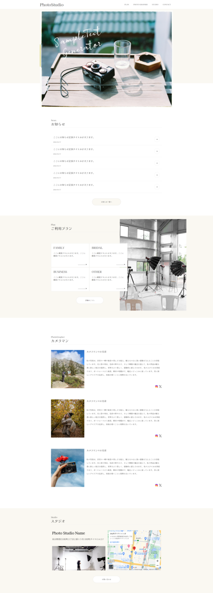
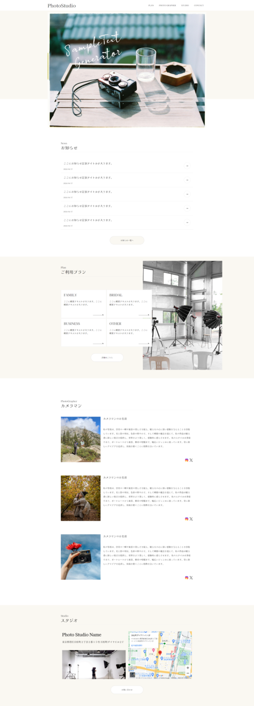

目次
- シンプルなレイアウト
- 読みやすいフォントと行間
- カラースキームの調和
- モバイルフレンドリーなデザイン
- 速度とパフォーマンス
シンプルなレイアウト
SWELLはシンプルなデザインが特徴です。記事画面も余計な装飾を省き、情報をわかりやすく整理したレイアウトが好まれます。必要最低限の要素を配置し、読みやすいデザインを心がけましょう。
読みやすいフォントと行間
記事本文のフォントや行間は、読みやすさに直結します。SWELLのようなデザインでは、読みやすいフォントを選び、適切な行間を設定することが重要です。
カラースキームの調和
SWELLは、シンプルで統一感のあるカラースキームを採用しています。記事画面でも、メインカラーとアクセントカラーを調和させ、統一感を持たせることが大切です。また、背景色やテキスト色など、読みやすさに配慮したカラースキームを選ぶことも重要です。
モバイルフレンドリーなデザイン
SWELLはモバイルフレンドリーなデザインが特徴です。記事画面もモバイルデバイスで快適に閲覧できるように、レスポンシブデザインを意識しましょう。フォントサイズやレイアウトを調整して、モバイルデバイスでも読みやすい記事画面を提供しましょう。
速度とパフォーマンス
SWELLは高速なパフォーマンスがウリの一つです。記事画面も読み込み速度を意識して軽量化し、ユーザーエクスペリエンスを向上させることが重要です。画像の最適化や不要なプラグインの削除など、パフォーマンスに影響する要素を見直しましょう。
 
